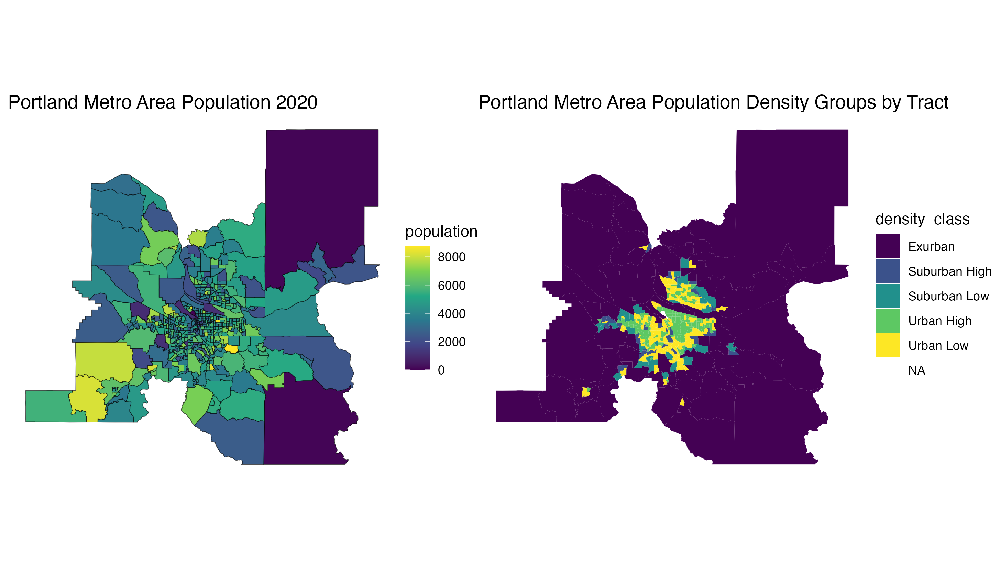
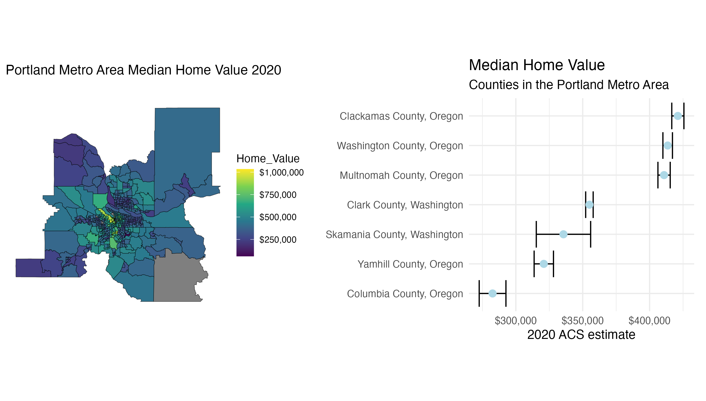

Spatial Demography Portfolio
Income and Home Values in Portland, Oregon
Population of The Portland Metro Area

The Portland metropolitan area consists of seven counties located in Oregon and Washington. With a population of 650,000 people, Portland is the largest city in Oregon. The figure above to the left shows the population distribution in the metro area by census tract. We can see clusters of high and low population interspersed throughout the region, with the majority of high population tracts located near the city center. After classifying tracts into population density classes, this pattern is easier to detect. The figure above to the right clearly identifies an urban and suburban core, surrounded by exurban zones.
Median Income in Portland

The overall median income in the Portland metro area sits around $91,000 per year. Looking tract by tract, we can see higher incomes located closer to the city center with some tracts reaching as high as a median $200,000 per year. Referencing the population figures above, we can see that most of these higher income areas line up with urban and suburban zones. Expanding outward to look at rural and exurban zones, we can see higher frequencies of tracts with lower median incomes.
Median Home Value in Portland

Similar patterns in income can be observed while investigating median home values in the Portland metro area. Here we can see overall higher home values near the urban center of the metro area with some tracts reaching as high a median home value of $1,000,000. Moving out from the city center and moving toward the rural and exurban zones, we can see the majority of median home values tapering off and sitting in between $250,000 and $500,000. Looking at the breakdown of home values by county, we can see that Clackamas, Washington and Multnomah County all have noticeably higher median home values than other counties in the metro area. This can likely be explained by the fact that these three counties make up the majority of the urban and suburban zones in the area, while Clark, Skamania, Yamhill, and Columbia County make up the majority of the rural and exurban zones.